长片中的短瞬态音画核查
十七题开放回答 · 非语音瞬态与画面实例消歧
正式分数待人工核准真值
一、任务定义
给定约102分钟完整电影和17道开放式问题，定位短促非语音声音对应的画面动作、状态与重复实例。直接回答发生了什么，而不是给“是／否”标签。
输入
《The Cosmonaut》（2013）完整英语主音轨电影，6107.776秒，包含原始片尾。只给原片、任务说明和委托／问题，不提供作者标注、正确转写或定位索引。
交付与验收
verdicts.json、可阅读核查报告、原片时间区间与证据。允许指出题目前提有误、声音不清或动作方向不能确认。
允许自主联网、下载通用模型、抽帧和读取音频；无工具次数、帧数、音频或执行时长预算。
展开全部十七道开放问题
- MAV01控制室电话那一下较硬的点击响起时，操作员的手和听筒正处于什么动作阶段？不要把后面的持话状态当成该瞬间。
- MAV02森林微距段中，较早那声粗哑鸟叫响起时画面正在展示什么？与后面相似鸟叫出现时的微距对象区分。
- MAV03同一组微距镜头中，后面那声相似鸟叫响起时，画面已经从蛛网换成了什么纹理？发声者是否可见？
- MAV04厨房极近景里那一下咔哒并接短促气流样声音时，画面中发生了什么可见变化？与随后较宽厨房镜头中的稳定状态区分。
- MAV05屋顶段落中第一下清脆玻璃样短响附近，几个人手里的瓶子处于什么位置/动作阶段？请与紧接着各自饮用的状态区分。
- MAV06酒吧段中那一下较重的哐声，正在操作物件的是谁？他手里的物件与台面是什么关系，而另一人此时在做什么？
- MAV07冰桶挑战里第一次尖锐碎响/撕裂样短声出现时，画面是宽景对话还是桶内近景？手与冰块处于什么关系？
- MAV08工业设施交叉剪辑中，短暂的摩擦/轻拍声附近，镜头中的手正在操作什么？请与随后管道、压力表段的声音区分。
- MAV09两名男子室内对峙中，第一下明显的钝响/散落声时，谁的身体在推动谁、画面处于什么取景？不要用后面近脸抓握动作代替。
- MAV10体检、控制室、厨房快速交替的蒙太奇里，一次较亮的金属刮碰声附近，画面中是哪类人物在搬动哪件器物？
- MAV11在海鸟镜头之前的室内设备特写里，第一下清楚的咔哒附近，手位于设备的哪一部分、在操作什么形态的物件？
- MAV12机械操作镜头之后的尖锐短鸟叫附近，画面是天空中的鸟、海面，还是仍是室内机器？请说明短声时声源可见程度。
- MAV13放映照片段里，从水边坐着的人物照片换走时的那声短机械响后，幕上紧接着出现什么画面？不要混用更晚的换片实例。
- MAV14同一放映段中，更晚一次从亮白过渡出来的短机械响后，照片里最显著的新物件是什么？请与木栈桥那张区分。
- MAV15雨中行车段内，在周期性机械声之外那一下独立咔哒出现时，手正在碰触哪个部位、完成什么动作？
- MAV16林中车辆段落第一次大的撞击后，短尾响附近车辆是在何种画面中、车身与周围环境有什么可见变化？
- MAV17车辆停下后重复短咔哒中的一次响起时，当前画面主体是什么？它与此前挡风玻璃镜头里的周期声所对应的可见运动有什么不同？
评分标准与真值状态
17题等权，每题可听事实1分、可见事实1分、音画／实例关系2分、有效证据1分，再换算百分制。按语义和有效定位判断，不按严格时间IoU，也不因证据上下文较宽扣分。候选真值未人工确认。
gpt-6.1-terra high负责语义评分。遵照本轮口径，按裁判原票展示，不采用组织者回查改分。候选事件和人类真值不同：尚未完成人工确认，不发布正式单一分数；疑点保留区间。API失败不计模型零分。
区间端点仅表示待核对项全未命中／全命中，不是统计置信区间。裁判原票与冻结题目保留不变。
以下展示节选用于回看交付；正式测试输入始终是完整电影。
二、运行结果
| 被测模型 | 实际 effort | 真实耗时 | 裁判原始区间 | 状态 |
|---|---|---|---|---|
| gpt-6.1-sol | xhigh | 38:01.4 | 73.5–100.0 | exit 0 · 有效交付 |
| Kimi K3.1 | max | 30:34.5 | — | 平台/接口中断；未评分 |
| DeepSeek V4.1 | max | 145:32.4 | 54.1–100.0 | exit 0 · 已交付 |
运行于2026-11-11；Sol/NJU Link，其他模型/DashScope；真实Codex CLI，Windows正常联网。Sol实际运行ASR、CLAP、AudioSet AST、波形和逐帧检查；没有预配Qwen3.8求解接口。
Sol有1次有效完成运行，17题均有答案；同一交付裁判两次，原始区间分别为 75.3–100.0、71.8–100.0，均值 73.5–100.0。尚有来源／时间关系待定项，不能把区间下界解释为全部错误已经确认。
Sol首次尝试因账号并发限制未开始有效求解；Kimi运行受平台图像检查中断，均未计0分。DeepSeek已完成交付，主结果按其原始裁判判票展示；不同模型实际effort按CLI记录，不宣称严格等配置比较。
实际交付
下面按原片时钟回看模型交付。文本保持模型原意，HTML为展示渲染。
MAV01 · 控制室电话那一下较硬的点击响起时，操作员的手和听筒正处于什么动作阶段？不要把后面的持话状态当成该瞬间。
答案：较硬的点击附近，操作员已伸手抓住黑色听筒，正在机座托架处提动、调整握持；听筒仍低低地靠近托架，还没有送到耳边。随后才有明显向上举起、靠耳持话的动作。
声音：电话段的底噪、铃/电声中有一记起音很硬、很短的咔嗒，约在 771.98 秒；与后面的说话声不同。
画面：耳机已经落在脖子附近，操作员向电话伸手，握住横放的听筒；在托架上方短暂提动、回落调整，之后约 772.7—773 秒才将听筒举到脸旁。
对应关系：短响对应的是取听筒时在机座附近的接触、提动阶段，不能用后面稳定靠耳通话的画面替代。
模型交付的原声证据短片
原片 12:46.0 · 范围 12:46.0–12:57.0 · 下载原声节选
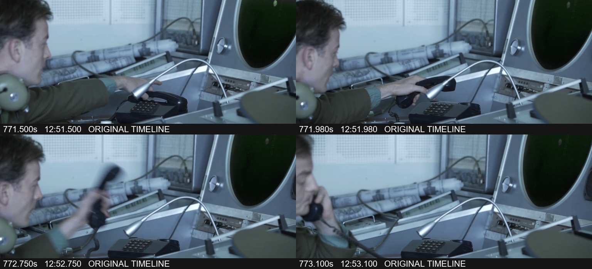
模型疑点：单凭短响不能确定是听筒哪一端或托架的哪一处碰响。
MAV02 · 森林微距段中，较早那声粗哑鸟叫响起时画面正在展示什么？与后面相似鸟叫出现时的微距对象区分。
答案：较早那组粗哑、带几个短音节的鸟叫出现时，画面是细树枝之间挂着的蛛网：细丝和水珠在绿色虚化背景前发亮。还不是后面的树皮、地衣特写。
声音：约 1097.8—1099 秒有一组较粗哑的嘎/啊样鸟鸣，旁边还有更细的零星啁啾和轻微户外底声。
画面：近处横斜的细枝上有水珠，枝间结着一小片细密蛛网，背景是失焦的绿色林叶；画中没有发声的鸟。
对应关系：这是蛛网镜头上的画外鸟声；约 1105 秒相似的下一组叫声才落在另一种微距纹理上。
模型交付的原声证据短片
原片 18:14.0 · 范围 18:14.0–18:31.0 · 下载原声节选
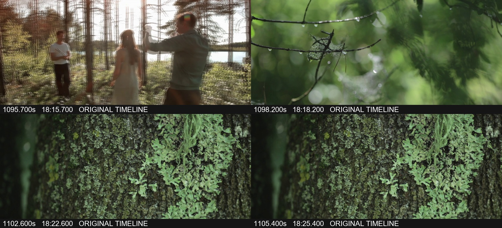
模型疑点：不据叫声指定精确鸟种。
MAV03 · 同一组微距镜头中，后面那声相似鸟叫响起时，画面已经从蛛网换成了什么纹理？发声者是否可见？
答案：后面相似的粗哑鸟叫出现时，画面已经换成深褐色粗糙树皮上贴生的浅绿色地衣，呈斑片、叶状、鳞片般的纹理。发声者没有入镜。
声音：约 1105—1106.5 秒又出现一组与前面相似的粗哑短叫，间杂较尖细的小鸟音。
画面：树干表面沟裂明显，上面覆盖浅绿、灰绿色的地衣斑片；不再是细枝之间透亮的网丝。
对应关系：鸟鸣延续同一片森林的环境感，但第二次叫声对应的是地衣/树皮镜头，不能把它定位回前一个蛛网镜头。
模型交付的原声证据短片
原片 18:14.0 · 范围 18:14.0–18:31.0 · 下载原声节选
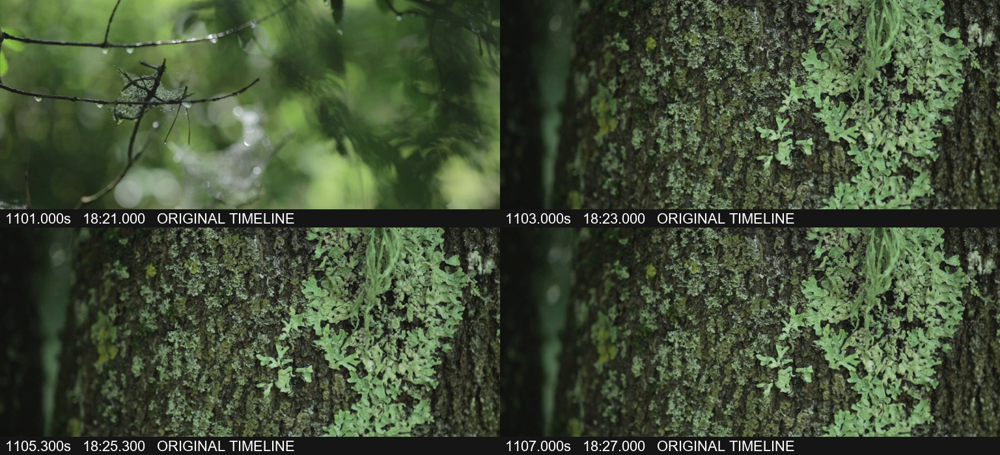
模型疑点：画面不能确认具体是哪只鸟发声，也不必辨认地衣种类。
MAV04 · 厨房极近景里那一下咔哒并接短促气流样声音时，画面中发生了什么可见变化？与随后较宽厨房镜头中的稳定状态区分。
答案：短咔与扑/嘶样气流声附近，画面由人物镜头切入炉头极近景，一圈蓝色火焰突然显现、蹿动，随后持续燃烧。再往后的厨房宽景里，女人背对镜头站在灶前，炉火已保持点着的状态。
声音：约 1163.9 秒起有短促的机械/摩擦起音和随即展开的气流、燃烧样嘶声；近景后半仍有细小碰响与持续底声。
画面：可见圆形炉头的小火孔及蓝色火圈，火舌微微变高、摆动；约 1168.2 秒后切到女人、窗户和整台炉具的较宽镜头。
对应关系：短声与炉火在极近景中显现、建立的时段相连，不能只用后面宽景中已点着的炉火回答。
模型交付的原声证据短片
原片 19:22.0 · 范围 19:22.0–19:34.0 · 下载原声节选
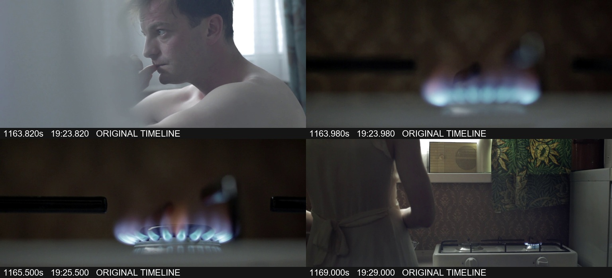
模型疑点：剪接进入炉头时蓝焰已可见，未完整展示同一连续镜头内的无火到有火过程，也没有拍到手或点火装置；不能据此补写拧阀、按点火器等动作。
MAV05 · 屋顶段落中第一下清脆玻璃样短响附近，几个人手里的瓶子处于什么位置/动作阶段？请与紧接着各自饮用的状态区分。
答案：第一下清脆的玻璃样短响附近，几人正把瓶子向同伴伸过去、在两人或数人之间靠拢碰瓶。瓶子处在举起敬酒、接触或刚分开的阶段；紧接着才各自收回、举到嘴边饮用。
声音：对话之后有几记很短、较亮的叮/碰声，约 1353—1354 秒的碰瓶阶段最清楚。
画面：五个男子坐在屋顶边缘，右侧几人的手臂伸向彼此，中央偏右的瓶子先聚到一起，左侧两人也举瓶相碰；随后各人仰头举瓶喝。
对应关系：清脆短响与瓶子靠拢相碰相配；约 1355 秒后的瓶口贴嘴、仰头饮用是后续动作。
模型交付的原声证据短片
原片 22:30.0 · 范围 22:30.0–22:39.0 · 下载原声节选
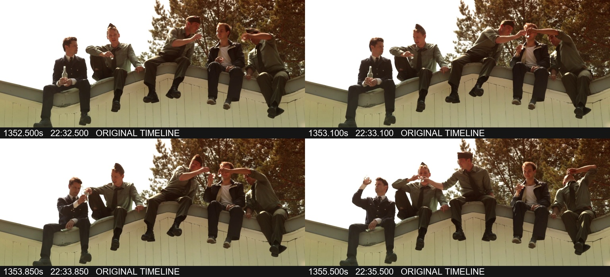
模型疑点：几处碰瓶动作相继发生，不将一记短响强行分配给每一只瓶子。
MAV06 · 酒吧段中那一下较重的哐声，正在操作物件的是谁？他手里的物件与台面是什么关系，而另一人此时在做什么？
答案：是画面右侧穿绿色衬衫、系深色领带的男子。他刚从低处拿起金属冰桶，向前移并落到吧台上，重哐落在桶接触台面的阶段。左侧白衬衫男子仍坐着，一手拿啤酒瓶、另一手抬着做手势，并没有在放桶。
声音：约 1456.65 秒有一记明显高于背景的硬哐，带很短的金属/容器余响。
画面：绿色衬衫男子把银色圆桶从悬空的位置降到台面；白衬衫男子面向他，瓶子握在身前，另一只手掌抬起。
对应关系：哐声与右侧男子将桶放上台面相配。白衬衫男子更早有举瓶饮用的动作，但重哐当下的主要动作是持瓶和抬手回应。
模型交付的原声证据短片
原片 24:06.0 · 范围 24:06.0–24:19.0 · 下载原声节选
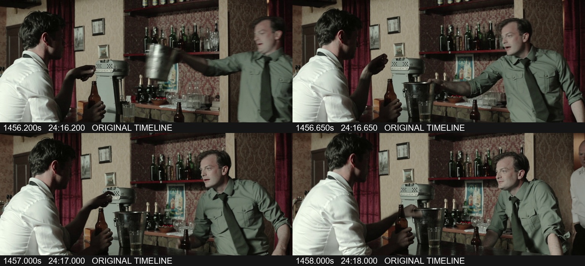
模型疑点：容器接触台面明确；音响的真实制作材质不能单凭音色确定。
MAV07 · 冰桶挑战里第一次尖锐碎响/撕裂样短声出现时，画面是宽景对话还是桶内近景？手与冰块处于什么关系？
答案：第一次突出的尖锐碎响出现在桶内的俯拍近景。手和前臂正在往冰块里压入、穿过，冰块被挤动、推开，围在手腕周围；不是两人在桌边说话的宽景。
声音：约 1473.3 秒有一下短而尖、带碎裂/撕裂感的咔嚓，接着是较轻的碎碰、搅动声，旁边仍有对白。
画面：画面几乎由桶口、透明不规则冰块和伸入的手臂组成；手由上方插进冰堆，冰块在周围滑移。稍后才切回二人坐桌两侧、手放入桶中的宽景。
对应关系：第一次明显碎响贴着手压入冰堆的近景发生；后续宽景只是保持挑战姿势，不能替代首次入冰的瞬间。
模型交付的原声证据短片
原片 24:27.0 · 范围 24:27.0–24:38.0 · 下载原声节选
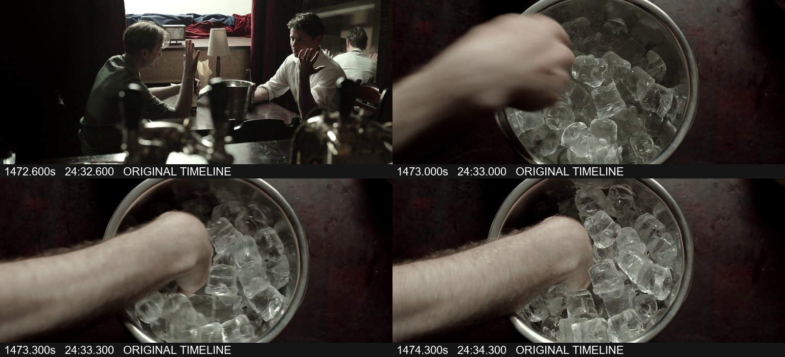
模型疑点：可描述为冰块挤动时的碎响，不据此认定某块冰真的裂开，更不是可见物件被撕破。
MAV08 · 工业设施交叉剪辑中，短暂的摩擦/轻拍声附近，镜头中的手正在操作什么？请与随后管道、压力表段的声音区分。
答案：手在翻照片相册：扶住大本厚纸页，把贴着照片的一页掀起、翻过并放下。它是与工厂人物交叉剪辑的室内相册镜头；后面才切到金属管道、法兰和圆形压力表。
声音：相册段里有较短的沙/刷样摩擦和轻拍、落页声，尤其后一次翻页约 2456 秒附近；后面的管道段则有更连续、渐强的工业嗡、嘶、摩擦及震颤感。
画面：浅色长袖女子坐着翻开大相册，双手扶着厚页，页上有矩形照片。交叉剪辑中的男子穿工作外套、拿图纸；约 2463 秒起出现管道与压力表特写。
对应关系：短摩擦/轻拍附近的手是在操作相册页，不能因相邻工厂镜头就说成扳阀门或调压力表；后者是另一段画面和声响。
模型交付的原声证据短片
原片 40:36.0 · 范围 40:36.0–41:11.0 · 下载原声节选
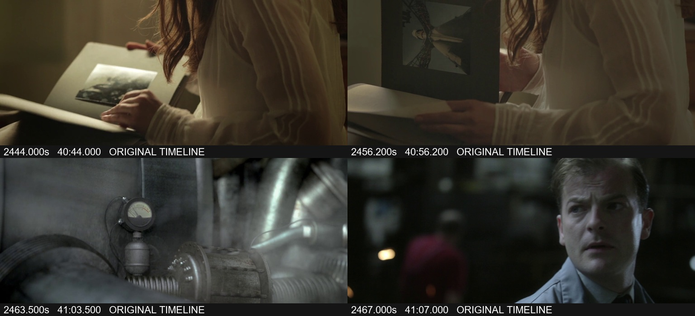
模型疑点：环境声和工业声在交叉剪辑中会衔接、叠加，不能把所有低沉声都归为纸页本身。
MAV09 · 两名男子室内对峙中，第一下明显的钝响/散落声时，谁的身体在推动谁、画面处于什么取景？不要用后面近脸抓握动作代替。
答案：第一下明显钝撞、紧接散落碰响时，是穿深色厚毛衣、眼上贴白色胶布的男子把身体向前顶过去，将白色短袖男子撞得后仰、退向镜子下方的台面。此时短暂切成能同时看见两人上身、镜子和台面的较宽双人中景，随后才回到近脸抓握。
声音：约 2559.2—2559.8 秒有突出的砰/咚，伴随急促的杂物碰落、散响和衣物摩擦。
画面：深色毛衣男子背朝镜头、上身猛向白衣男子压去；白衣男子后仰，手臂还搭在对方头颈附近。镜子与台面同时入画，之后切回两张脸和衣领的近景。
对应关系：首个大钝响对应身体推进、后仰撞到台面附近的一次冲撞；后面的揪衣领、贴脸压制是延续动作。
模型交付的原声证据短片
原片 42:35.0 · 范围 42:35.0–42:45.0 · 下载原声节选
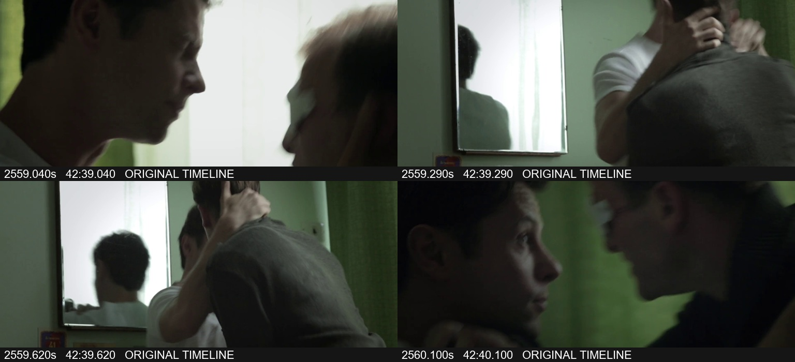
模型疑点：台面下部及散落物被身体遮住，不能点名具体哪件东西掉落。
MAV10 · 体检、控制室、厨房快速交替的蒙太奇里，一次较亮的金属刮碰声附近，画面中是哪类人物在搬动哪件器物？
答案：是厨房里穿白色工作服、围裙并戴发网的女工作人员，在双手搬移一个大型长方形金属烤盘/浅托盘。她把盘端起、转身移到前方，继而向台面放低；不是受检者或控制台操作员拿医疗器械。
声音：约 2965—2968 秒有较亮的短刮擦、硬碰声，带短促的金属/空容器感，混在蒙太奇的背景声里。
画面：在泳池体检、控制室等镜头之后，厨房工作人员双手端着有浅壁的长方形大盘，从身侧设备处移到身前、放向下方台面；后方可见秤、厨房机器和瓷砖墙。
对应关系：亮刮碰声附近正在发生的是厨房搬动金属盘的动作；白服在此是厨工装束，不能只因同段有体检就当作医务人员。
模型交付的原声证据短片
原片 49:10.0 · 范围 49:10.0–49:31.0 · 下载原声节选
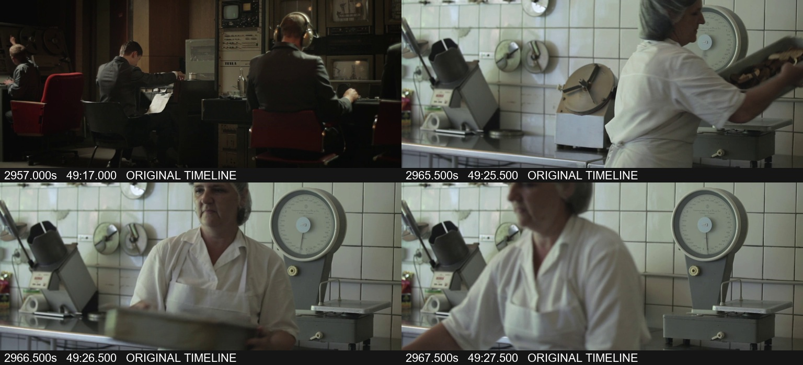
模型疑点：不强行区分烤盘的用途，也不能把每一记短碰都精确指定为盘沿与某一件机器相碰。
MAV11 · 在海鸟镜头之前的室内设备特写里，第一下清楚的咔哒附近，手位于设备的哪一部分、在操作什么形态的物件？
答案：手在设备上半部的大圆盘、盘轴区域，抓着盘缘/中心附近，取动带有开孔或白色径向条的大圆形带盘。第一下清楚咔嗒附近仍是拆取、提动盘状物的操作，不能说成在下方按钮排上按播放键。
声音：约 3006.9 秒有干短的咔嗒；后面取放圆盘、接触机件时还连续出现数记间隔不一的机械短响及轻擦声。
画面：室内设备的正面有大圆盘和盘轴，制服袖口的两只手在上部取动圆盘；一只透明带孔圆盘已被提起，另一只手仍在带白色条的大盘附近，随后盘状物被移向下方容器。
对应关系：第一声与上方盘轴/带盘操作相邻。后面继续取放、移手的咔嗒不能被混作第一下的按钮动作。
模型交付的原声证据短片
原片 50:04.0 · 范围 50:04.0–50:25.0 · 下载原声节选
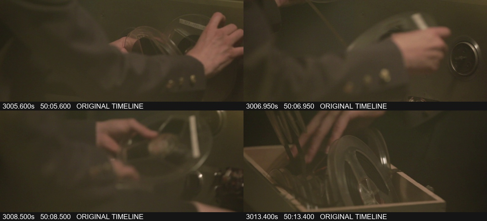
模型疑点：可见形态足以确定为卷盘/盘状部件；不必断定设备型号或每个锁紧件的名称。
MAV12 · 机械操作镜头之后的尖锐短鸟叫附近，画面是天空中的鸟、海面，还是仍是室内机器？请说明短声时声源可见程度。
答案：尖锐短鸟叫附近已切到金黄色天空中的飞鸟镜头。切入时鸟就在画面上部，张翼掠过，随后短暂飞出上缘，天空变空；后面鸟又进入画面。此时还不是海浪沙滩，也不是室内机器。鸟能短暂看见，但看不清嘴部，不能逐声确认是哪只鸟在叫。
声音：机械底声之后，约 3017.2—3019.1 秒有几记尖、略带粗边的短鸟叫；约 3019.2 秒起较响的男声是随后进入的旁白，不能把它当成那一下鸟叫。
画面：约 3017.1 秒从室内卷盘设备切到暖黄色天空，鸟在上部飞行，约 3017.5 秒前后飞出画框；约 3019.6 秒后又见鸟飞入。约 3021.6 秒后才切到海浪、沙滩。
对应关系：鸟叫落在天空飞鸟镜头内；叫声持续的部分时段鸟已飞出画框，因此声源并非全程可见。不能把后面的海滩镜头或更早的卷盘机械操作当作短叫当下的画面。
模型交付的原声证据短片
原片 50:04.0 · 范围 50:04.0–50:25.0 · 下载原声节选
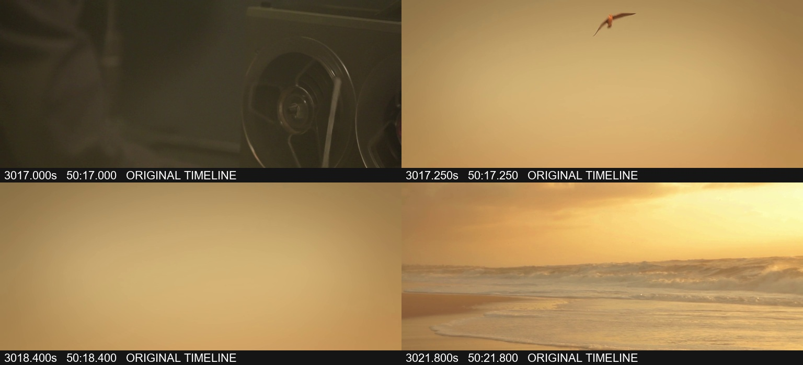
模型疑点：画中能辨认飞鸟的轮廓和翅膀，但不能从嘴型证实具体哪只鸟发出每一声，也不指定鸟种。
MAV13 · 放映照片段里，从水边坐着的人物照片换走时的那声短机械响后，幕上紧接着出现什么画面？不要混用更晚的换片实例。
答案：水边坐着几个人的合影换走后，幕上紧接着是一张安静湖面与木栈桥/小码头的照片：近处木板伸向水边，远处是一条树林岸线及其倒影。不是后来有人扶着自行车的照片。
声音：约 3474.2 秒有短促的咔嚓/机械推进声，前后仍有轻微设备底声。
画面：原照片中几个人坐在草地、水边；照片短暂暗/空一下，再出现木栈桥、平静水面、远岸树林的风景。
对应关系：这一记换片声连接的是“水边人物合影→木栈桥湖景”这一次，不能借用更晚的自行车换片实例。
模型交付的原声证据短片
原片 57:49.0 · 范围 57:49.0–58:11.0 · 下载原声节选
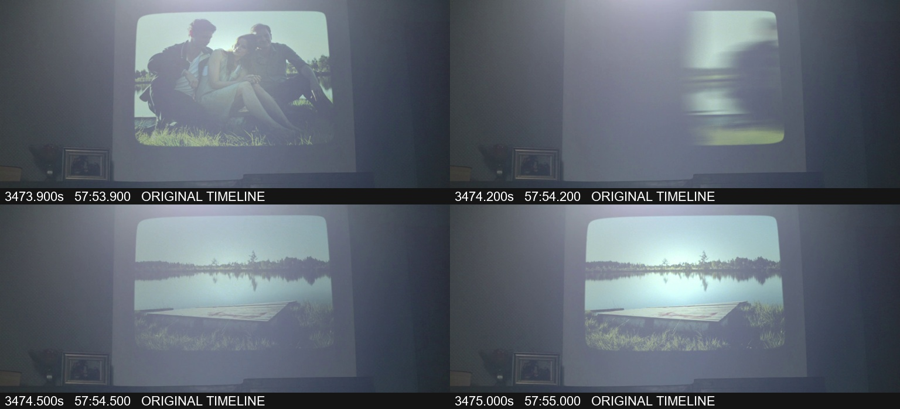
模型疑点：
MAV14 · 同一放映段中，更晚一次从亮白过渡出来的短机械响后，照片里最显著的新物件是什么？请与木栈桥那张区分。
答案：更晚这次亮白过渡之后，新照片里最显著的物件是自行车；有人站在水边的路/岸上扶着车，车轮和车架很醒目。它不是前面伸入湖边的木栈桥那张。
声音：约 3484.9—3485.2 秒又有一记短机械咔嚓，音型与前面换片的短声相似。
画面：幕面先有一张较亮、模糊的照片与过渡亮面，随后出现一人和自行车的水边照片；左侧还有另一人物，背景为湖水、岸线。
对应关系：这一次短响对应亮面过渡后显出自行车；木栈桥是约十一秒前另一次换片的结果。
模型交付的原声证据短片
原片 57:49.0 · 范围 57:49.0–58:11.0 · 下载原声节选
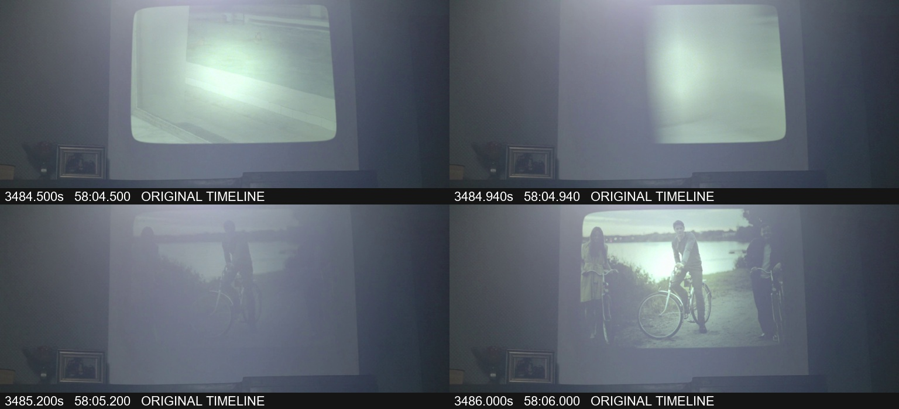
模型疑点：
MAV15 · 雨中行车段内，在周期性机械声之外那一下独立咔哒出现时，手正在碰触哪个部位、完成什么动作？
答案：独立咔哒时，双手在腰侧、腿上的安全带锁扣处，捏住并拨动红色扣片，随后松手，扣具留在腿上。这一下对应安全带扣的操作；关键锁舌被手遮挡，无法可靠判定是扣合还是解开的最后一步。
声音：雨声、行车低响和周期性的刷擦声之上，约 4706.5—4707 秒有一次独立的短扣合/解扣样咔嗒及紧接的轻碰。
画面：镜头切到腿部近景，双手围着红黑色安全带扣操作；红色扣片被拨动，之后双手抽走，黑色扣体及带子留在浅色裤腿上。
对应关系：这一下独立短声对应安全带扣的手部操作；此前反复的机械声跟雨刷在湿玻璃上来回扫动相连，是另一个动作来源。
模型交付的原声证据短片
原片 78:19.0 · 范围 78:19.0–78:30.0 · 下载原声节选
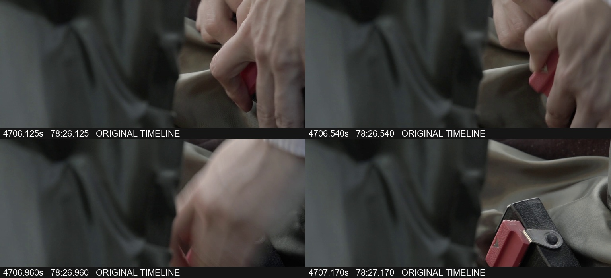
模型疑点：锁扣的接合处在关键几帧被手遮挡；可明确辨认安全带扣及红色扣片操作，但无法可靠分辨锁舌插入还是拔出。
MAV16 · 林中车辆段落第一次大的撞击后，短尾响附近车辆是在何种画面中、车身与周围环境有什么可见变化？
答案：大撞击后的短尾响附近，是隔着树干看车的林中外景远景。车身在不平的林地上猛颠、倾斜并转向，周围扬起一团灰土/尘雾；短尾声时已是车头朝镜头的远处取景，车还在尘雾里摇晃、逐渐停稳。
声音：约 4719.45—4719.8 秒是一记明显的大砰/撞击声，约 4720 秒又有较小、较短的砰/咔尾声，随后明显安静下来。
画面：先有较近的车尾/斜后方画面显示车身弹起、歪斜；接着切到隔着树林看车头的远景，大量灰土从车周围腾起，车在树间继续晃动。
对应关系：短尾声仍承接车辆冲入林地后的颠簸与尘土变化，不是车内手操作开关的特写。此处能确认车身姿态变化和扬尘，不能仅凭大撞声补写撞断某棵树。
模型交付的原声证据短片
原片 78:34.0 · 范围 78:34.0–78:48.0 · 下载原声节选
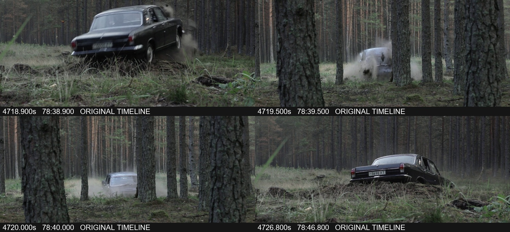
模型疑点：未清楚拍到轮胎或车头撞上哪个具体障碍，也没有足够依据说车翻覆或车身已出现哪处破损。
MAV17 · 车辆停下后重复短咔哒中的一次响起时，当前画面主体是什么？它与此前挡风玻璃镜头里的周期声所对应的可见运动有什么不同？
答案：重复短咔哒中的一记响起时，画面主体是车内中央仪表台/收音机面板及下方红色闪光指示件；驾驶者背肩占住右侧，下面还能看见挡杆。这里主要是红灯反复亮灭、车内近景保持；此前则是湿挡风玻璃上的雨刷持续往返扫动。
声音：停车后有节律较匀的干短滴答/咔嗒，两种轻重起音交替；例如 4733—4737 秒可清楚分出一连串离散脉冲，区别于行驶时的刷擦、雨噪和发动机底声。
画面：中央面板下方一个红色圆形指示件间歇发亮；人物背肩遮住部分右侧。作对照，4694—4699 秒的正面玻璃镜头里两支雨刷不断在雨滴间来回扫。
对应关系：停车后的重复短响与闪光指示件所在的仪表台镜头对应，可描述为指示/继电器样节律；它不是同一个雨刷往返运动的重放。无需强求每一帧的亮灯相位与每一记脉冲完全相同。
模型交付的原声证据短片
原片 78:51.0 · 范围 78:51.0–79:03.0 · 下载原声节选
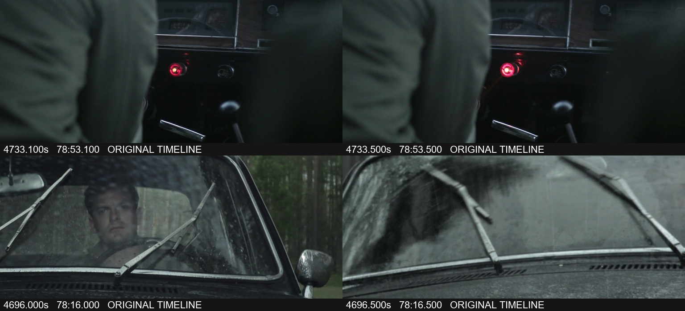
模型疑点：仅凭这一处红色闪光件不能可靠区分转向、双闪或其他警示电路，故不指定确切开关功能。
三、运行轨迹
先粗索引定位，再查声音与画面，最后交付并自检。轨迹页面默认显示过程总结，可切换关键步骤和全部公开记录。
四、失败分析
按原始裁判，Sol多项回答通过，主要不确定性集中在瓶子短响、翻册声、器皿动作、搭扣方向及车辆撞击实例等题。裁判对来源和时序未能确定的分项保留null，页面不替裁判自行定票。第1次原票 · 第2次原票
公开轨迹显示，Sol最后主动修正鸟叫与鸟入画的先后，并保留锁舌遮挡的疑点：修正鸟叫 #107、搭扣方向不确定 #113。这些是模型的交付修订过程，不是组织者对原片的替代评判。
这批问题给出明确场景与声学线索，模型能先建索引，再对候选段加密抽帧、实际运行声音分类并复查。CLAP执行 #65、AST执行 #80均有真实执行输出。片长和瞬态时长本身不足以保证高难度。
结果仍是开发诊断，候选真值待人工核准。本页采用裁判原始结果，不使用组织者来源复查改分；平台中断也不作模型零分。